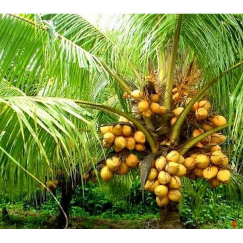

1. Land Selection: Choose well-drained sandy or loamy soil with good drainage to prevent waterlogging. Coconuts thrive in tropical or subtropical coastal regions. Ensure the land receives plenty of sunlight.
2. Variety Selection: Select coconut varieties suited to your region's climate. Varieties like "Tall" and "Dwarf" are common options. Consult local agricultural experts or your nearest agricultural extension office for recommendations.
3. Soil Preparation: Clear the land of weeds, rocks, and debris. Prepare pits or basins for planting by digging holes that are at least 30 cm (12 inches) deep and wide.
4. Planting: Obtain healthy coconut seedlings or germinate them from coconuts. Plant one seedling per hole or basin at a depth of about 5-10 cm (2-4 inches) below the soil surface. Space the coconut trees about 7-9 meters (23-30 feet) apart in rows that are 7-9 meters apart.
5. Fertilization: Apply organic matter, like well-rotted compost, to improve soil fertility. Coconut trees benefit from regular applications of balanced NPK (nitrogen, phosphorus, potassium) fertilizers. Follow local recommendations based on soil tests.
6. Irrigation: Water the coconut seedlings regularly, especially during dry spells. Once established, coconut trees are drought-tolerant but need consistent moisture for the first few years.
7. Weed Control: Keep the coconut plantation free of weeds, especially during the first few years. Weeds compete for nutrients and water. Use mulch to suppress weeds and retain soil moisture.
8. Disease and Pest Management: Monitor the coconut trees for signs of diseases such as bud rot and pests like rhinoceros beetles. Implement pest and disease management practices as needed, such as proper sanitation and pesticide applications.
9. Crop Management: - Prune coconut trees regularly to remove dead or diseased fronds and to maintain their overall health and appearance. - Support young coconut trees with stakes to prevent toppling.
